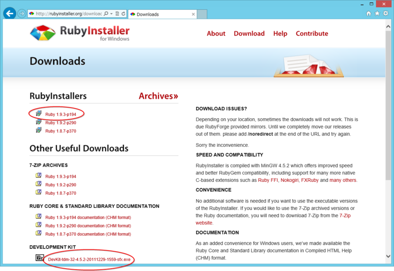
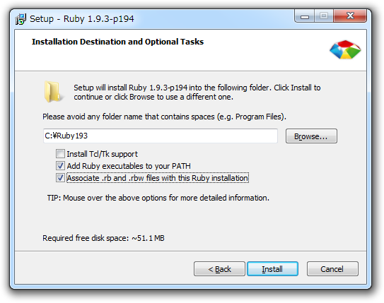
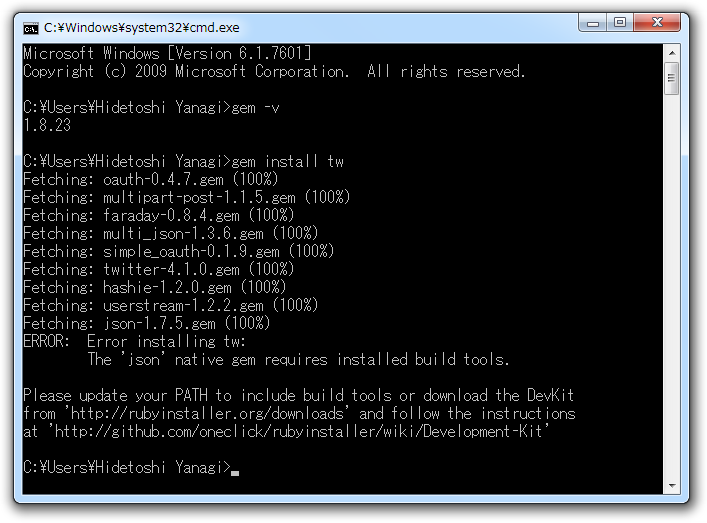
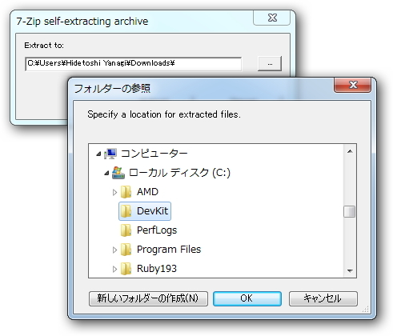

［Windows］ Ruby + DevKit のインストール
公開日：
ダウンロード

http://rubyinstaller.org/downloads/ で、
- Ruby 1.9.3-p194
- DevKit-tdm-32-4.5.2-20111229-1559-sfx.exe
をダウンロード。古いバージョンの Ruby を利用する場合は、DevKit のバージョンに注意。
Ruby 1.9.3-p194 のインストール

EXE 形式なので、そのまま実行。途中、Ruby の実行ファイルへパスを通しておくこと。なんでデフォでチェックが入っていないんだろう。関連付けは好きにすればいいと思う。
DevKit のインストール

このままでも利用できるのだけど、一部ネイティブな RubyGems をビルド・インストールには DevKit が必要。
慣れていれば、自己解凍書庫の中身をそのまま Ruby のインストールフォルダへコピーすればよかったと思う。自信がない場合は、公式の手順（https://github.com/oneclick/rubyinstaller/wiki/Development-Kit）に従っておく。
C:\DevKit へ解凍
解凍先はどこでもいい。7z 形式の自己解凍書庫になっているので、実行して解凍先（C:\DevKit）を指定する。

ruby dk.rb init / ruby dk.rb install
コマンドプロンプトを起動。解凍先（C:\DevKit）へ移動して、コマンドを二つ実行する。
>cd C:\DevKitC:\DevKit>ruby dk.rb init [INFO] found RubyInstaller v1.9.3 at C:/Ruby193
Initialization complete! Please review and modify the auto-generated 'config.yml' file to ensure it contains the root directories to all of the installed Rubies you want enhanced by the DevKit.
C:\DevKit>ruby dk.rb install [INFO] Updating convenience notice gem override for 'C:/Ruby193' [INFO] Installing 'C:/Ruby193/lib/ruby/site_ruby/devkit.rb'
ruby dk.rb init は Ruby のインストールフォルダを検知して、config.yml を生成する。ruby dk.rb install はそれをもとに DevKit をインストールする。通常、config.yml の編集は必要ないはず。
どうせなら RubyInstaller に DevKit も同梱しておいてほしいけれど（ライセンスの関係かな？ 知らんけど）、ゆとり過ぎますかね。